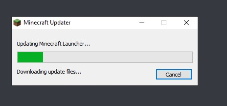
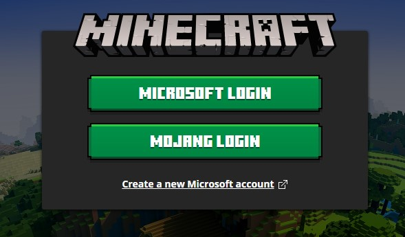
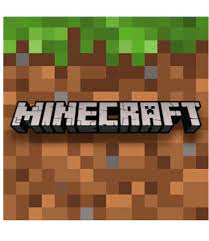
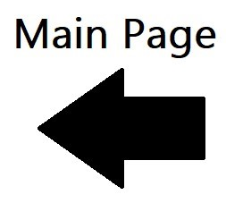

First, downlaod Minecraft launcher, and make sure that you have a Mojang account.

After downloading the Minecraft launcher, click the "Mojang Login" and then enter your Mojang e-mail and password, and then press enter.

If you didn't see the logo of minecraft, then here is a minecraft logo. There are many logos of minecraft.

